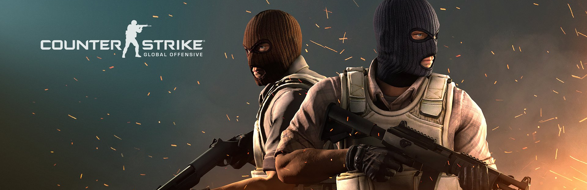

Counter-Strike Global Offensive
Counter-Strike: Global Offensive (CS:GO; с англ. — «Контрудар: глобальное наступление») — многопользовательская компьютерная игра, разработанная компаниями Valve и Hidden Path Entertainment. Последняя основная игра в серии игр Counter-Strike;[4] как и все игры серии, она посвящена противостоянию террористов и подразделений специального назначения. Выход на ПК под управлением Windows, на компьютерах Mac и игровых приставках Xbox 360 и PlayStation 3, состоялся 21 августа 2012 года. В 2014 году была выпущена на Linux[2], а в 2016 году — стала доступна, в рамках программы обратной совместимости, на Xbox One.[5] В 2018 году была выпущена бесплатная версия (Counter-Strike: Global Offensive Free Edition) без возможности играть с реальными игроками, представлены только поединки с ботами. История разработки Первые новости о разработке игры появились вместе с официальным анонсом — 12 августа 2011 года. Слухи о том, что компания Valve, ответственная за серию игр Counter-Strike, разрабатывает новую часть игры (последней на тот момент основной игрой серии, не считая отдельной версии, направленной на азиатскую аудиторию, была Counter-Strike: Source 2004 года) распространились несколькими днями ранее[6][7]. В анонсе игры сообщалось о том, что разработчики обещают сохранить основы игрового процесса «классической» версии игры — Counter-Strike 1.6, а также добавить новые карты для многопользовательских сражений (среди которых будут ремейки старых карт с улучшенной графикой), модели бойцов и оружие. В числе прочих усовершенствований ожидались онлайн-таблицы рекордов и система автоматического подбора соперников. Говорилось о том, что игра выйдет в начале 2012 года, а в 2011 году она будет продемонстрирована на выставках PAX Prime и Eurogamer Expo. Игра разрабатывалась для персонального компьютера с операционными системами Windows и Mac OS X, и для игровых консолей PlayStation 3 и Xbox 360 (там она вышла в онлайн-сервисах PlayStation Network и Xbox Live соответственно). Некоторые сайты предположили, что Counter-Strike: Global Offensive будет базироваться на последней версии игрового движка Source, собственной разработки Valve, на которой построены все последние игры студии; однако в официальном анонсе нет никаких уточнений, касающихся технологической части[8][9][10][11][12][13]. Несколько крупных сайтов опубликовали «трейлер игры», который на самом деле является перемонтированным любителем (в частности, изменена надпись в конце ролика) трейлером другой части, Counter-Strike Online.. По данным NPD Group за тот же период, Battlefield V оказалась на 3 месте после Red Dead Redemption 2 и Call of Duty: Black Ops 4[13]. Back
About

Varvara Alefirenko
Age:12
Sex:female
gmail:arliacats@gmail.com